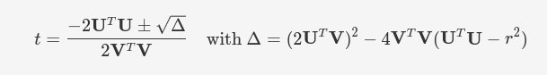
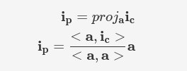
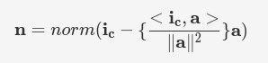
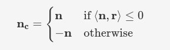

Theory Exercise Homework 1 (RT1)
Ray-Cylinder Intersection

Derive the intersection between a ray and a cylinder. Discuss how to compute the parameter t, which solution to pick in case multiple exist, and how to define the cylinder normal.
How to compute the parameter t
The implicit representation of an infinite cylinder is:
∥(x − c) × a∥ = r
with x a position in 3D space, c the center of the cylinder, a the central axis of the cylinder and r the radius of the cylinder.
We plug in x = (o + td), distribute out the central axis and group terms in t and terms not in t:
∥((o + td) − c) × a∥ = r
∥((o − c) + td) × a∥ = r
∥(o − c) × a + td × a∥ = r
To simplify the notation, we substitute U = (o − c) × a and V = d × a. We get:
∥U + tV∥ = r
We then develop the norm and group like terms:
r2 = (Ux + Vxt)2 + (Uy + Vyt)2 + (Uz + Vzt)2
r2 = (Ux2 + Vx2t2 + 2UxVxt) + (Uy2 + Vy2t2 + 2UyVyt) + (Uz2 + Vz2t2 + 2UzVzt)
r2 = (Vx2 + Vy2 + Vz2)t2 + 2(UxVx + UyVy + UzVz)t + (Ux2 + Uy2 + Uz2)
We recognize the dot products so we simplify the expression according to their rewrite, and transform it to a quadratic:
VTVt2 + 2UTVt + UTU = r2
VTVt2 + 2UTVt + UTU − r2 = 0
We can solve this form for t, finally getting: 
The point of intersection with the infinite height cylinder is therefore i = o + td.
Which solutions to pick
We now need to verify that this point of intersection is within the bounds of the height of the actual cylinder. Therefore we search for the height of the intersection in relation to the center of the cylinder. This is the length of the projection of the vector going from the center to the point of intersection to the cylinder’s axis. We denote that vector ic:
ic = i − c
We then compute ip, the projection of ic on the cylinder’s axis a.

Finally, we check that the length of the vector is less than half the height using:
2∥ip∥ ≤ h
If so, it means that we are indeed intersecting with the cyclinder.
Since t could have multiple solutions, we choose the smallest positive t such that the height requirement is met.
How to compute the cylinder normal
The cylinder’s normal n at intersecting point i should be defined as the normal to the part of the cylinder that is facing the camera. We can define it as the normalized vector from the cylinder’s axis c to the intersection point i without a component of the cylinder’s axis.
We have already computed the vector from the center to the intersection point, ic, so all we have to do is remove its projection to the axis a:

This normal points outwards from the center of the cylinder. This is fine most of the time, but we need to take into account the case where we are looking at the inside of the cylinder. Indeed, the normal would point outwards and away from the camera. In this case, we reverse the direction of the vector. The conditions for this are given by:
